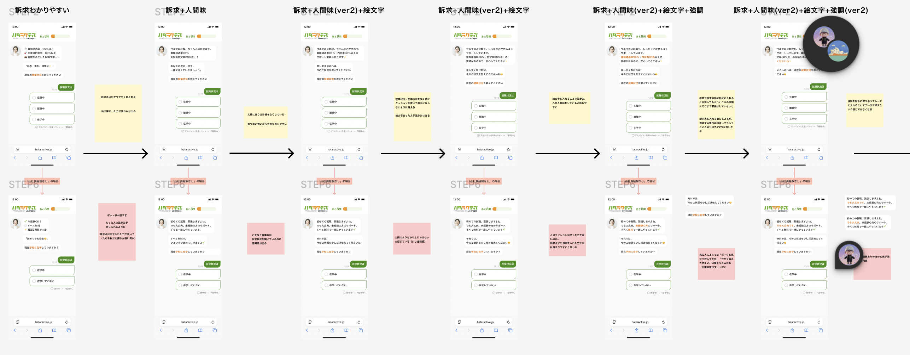
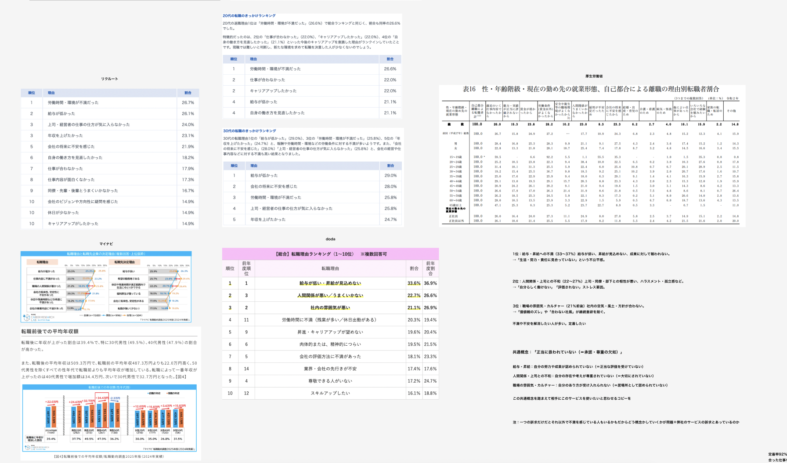
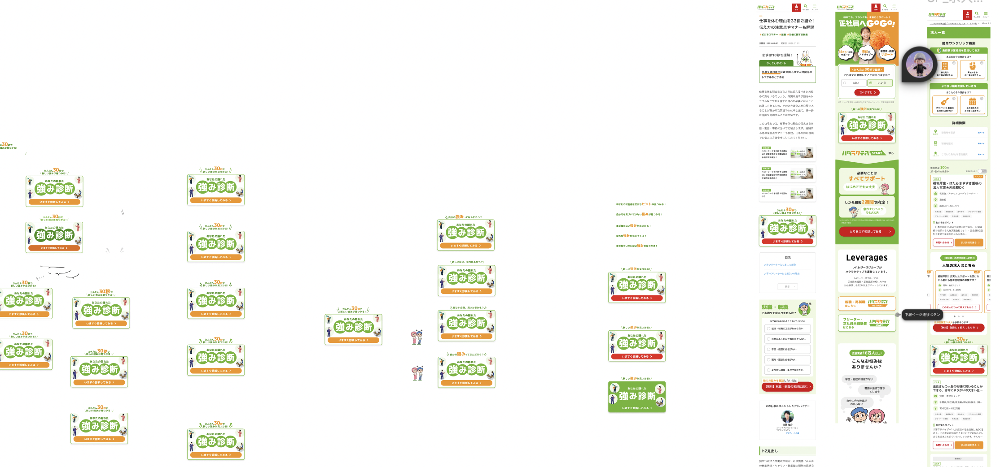
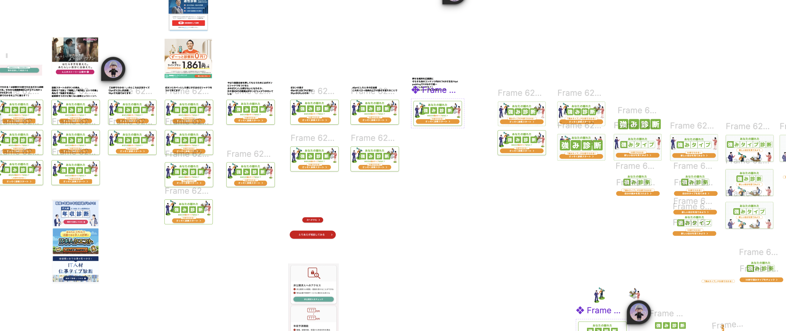
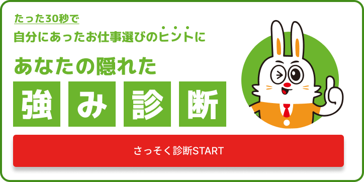
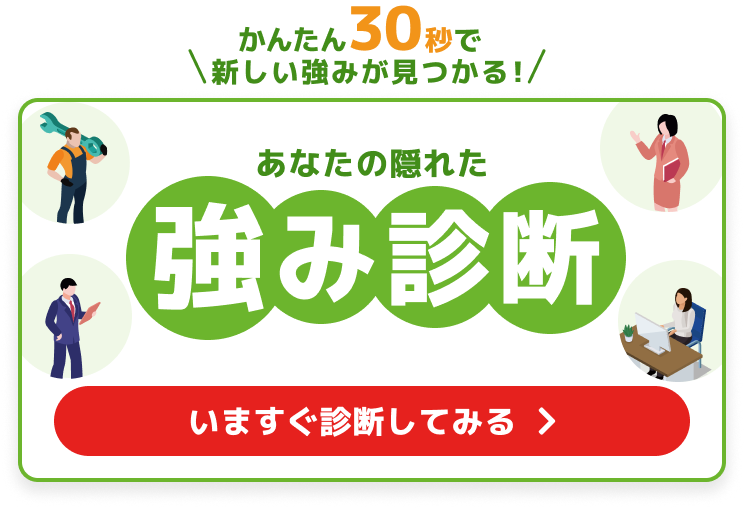
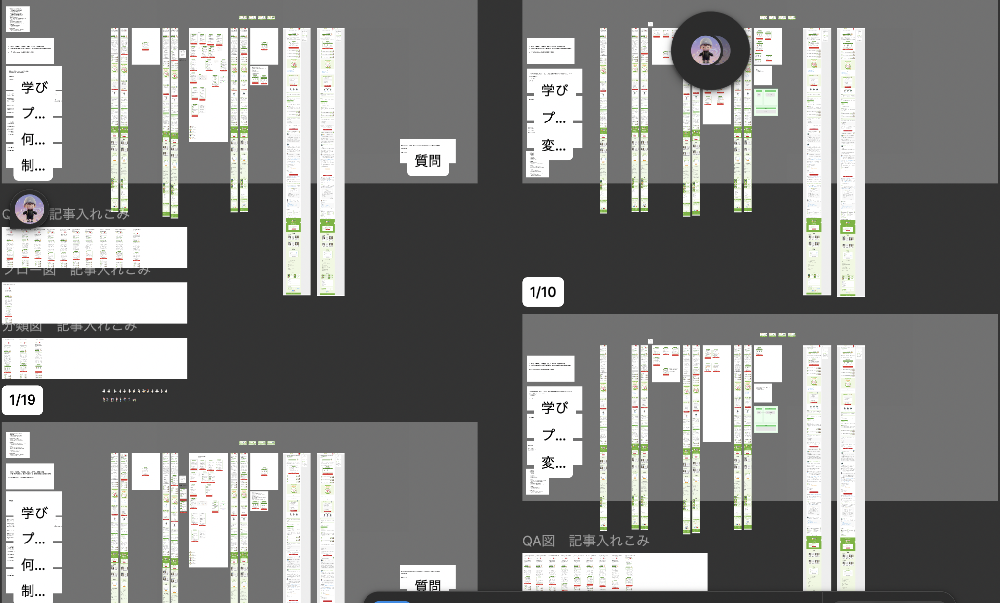
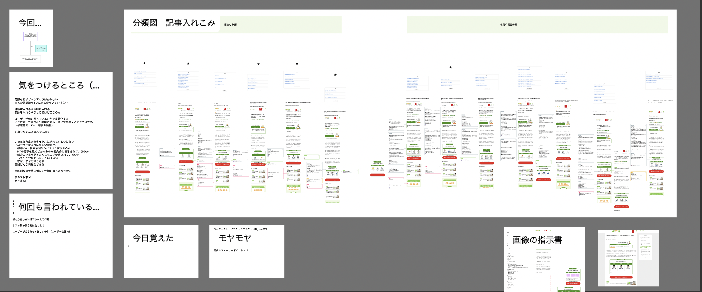
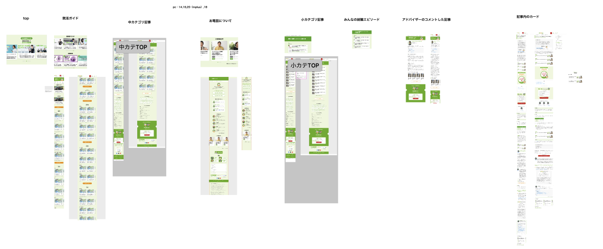
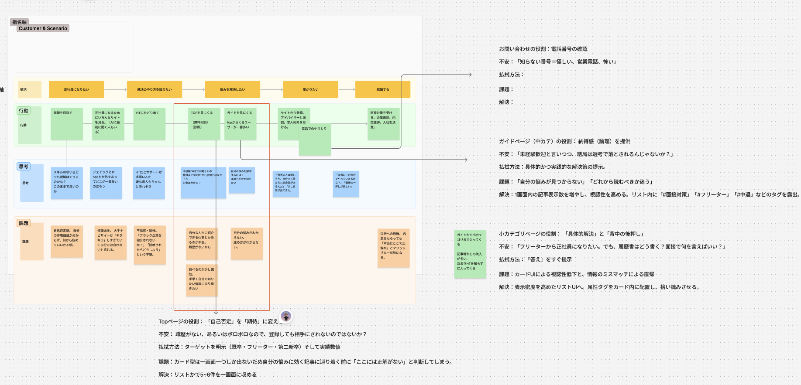

01
● 施策 #01
【HT】経験に合わせたサービス訴求を行うためにバナー訴求を変更_AB（EF）
- ✓担当：コピーライティング改修
- ✓競合調査
- ✓ユーザー理解
- ✓コピー修正
学んだこと
日本語の開き方


02
● 施策 #02
【HT】知りたい情報を直観的に把握できるように診断バナーを小さくする_AB（トップ、記事詳細、求人一覧）
- ✓競合調査
- ✓リファ集め
- ✓ワイヤー設計
- ✓デザイン設計
- ✓コピーライティング
- ✓A/Bテスト設計
- ✓効果測定
学んだこと
リファの集め方
情報設計
FBのもらい方


BEFORE


03
● 施策 #03
【HT】セカンドビューの
情報設計を変更
この施策でどんな課題を解決したか、どんなアプローチを取ったかを2〜3文で書いてください。
- ✓コンテンツパターン策定
- ✓情報アーキテクチャ設計
- ✓ビジュアルコミュニケーション設計
- ✓コピーライティング
- ✓UI/UXデザイン
学んだこと
インフォグラフィックス
思考の整理の仕方
鳥の目虫の目
開発側との連携
開発側との連携についてここに書く


04
● 施策 #04
【HT】カードのデザイン統廃合と
サムネイルテンプレート改修
- ✓リファ収集
- ✓コンポーネント設計
- ✓ページごとの体験設計改修
技術スタック
Next.js
Vercel
Supabase
役割
担当した役割をここに書く
BEFORE
AFTER
BEFORE
AFTER
BEFORE
AFTER